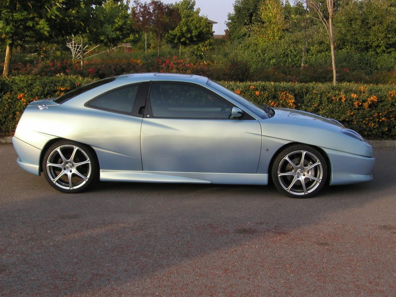

Fiat Coupe 20V Turbo

Completely standard apart from........
Wheels
- 7.5 × 18" Wolfrace Black Shadow Chrome Urban Racer, PCD 4×100, offset 37mm <more>
- McGard locking wheel bolts
Tyres
- 225 × 35 R18 Goodyear GS-D3 Eagle F1
Exterior
- FIAT badge on bonnet removed, recess filled and smoothed
- Pininfarina badges on lower rear quarter panels removed, holes filled and smoothed
- Boot lock removed, hole filled and smoothed
- Fiat Body Kit front bumper (Part#5909817)
- Fiat Body Kit side skirts (Part#5909819)
- Fiat Body Kit rear valance (Part#5909818)
- Fiat Black Honeycomb Plus front grill
- 20V Turbo badges removed off B pillars, filled, smoothed and painted satin black
- FIAT badge removed off tailgate
- Remote control tailgate release
- Painted Alfa Romeo Nuvola Blue
Instruments
- Aluminium Instrument surrounds <more>
- Aluminium Heater surrounds <more>
- Aluminium Clock surround <more>
- Aluminium Speaker surrounds <more>
- Blitz Electronic Boost Gauge <more>
- AEM Wideband UEGO Air/Fuel ratio Gauge <more>
- Honda S2000 starter button
Interior
- Nomad Racing 'A' pillar pod <more>
- Fiat Coupe LE Recaro leather seats and door cards
- 4 piece Black Fiat Custom mats with 20V logo (Part#46000995)
- Fiat Coupe Rear Window Sun Blind (Part#5907655)
- Richbrook 'Ball' Gear Knob <more>
- Fiat Aluminium handbrake handle (Part#5909837)
Engine
- RamAir Jetstream Filter <more>
- Forge Motorsport DV006 Dump Valve <more>
- Uprated Misubishi Evolution Front Mount Intercooler (70×300×470mm)
- NGK V-Power Race R5671A-8 Copper Plugs
- Custom made MSD 8.5mm ignition leads
- 5 × MSD LS-1 Gen III ignition coils
- Uprated PACE Alloy Radiator <more>
- SPAL 16" Pusher Fan <more>
- Walbro GSS340 255 lt/hr uprated fuel pump
- Dedicated wiring loom for fuel pump
- Siemens Deka 3 bar 630 cc/min (60 lb/hr) Injectors
- JE Custom Forged Pistons
- Carillo Custom Forged Rods
- Torque Italia straight induction pipe 3" to 2.5"
- Torque Italia Stage 4 Head <more>
- Torque Italia Exhaust Manifold <more>
- Torque Italia Flywheel <more>
- Torque Italia Polished Fuel Rail <more>
- Torque Italia Painted & Chrome Plated Camshaft Cover <more>
- Torque Italia Crankshaft <more>
- Torque Italia Uprated Water Pump
- Torque Italia Auxiliary belt protection pulley <more>
- Torque Italia uprated engine stabiliser bush <more>
- Torque Italia uprated lower engine mount
- Colombo & Bariani Camshafts <more>
- Garrett GT3076R-WG Turbo <more>
- Helix Autosport Paddle Clutch <more>
- Chrome Plated Slam Panel <more>
- Chrome Plated Exhaust Manifold Heat Shield
- Polished Plenum Chamber <more>
- Polished Alloy Oil Filler Cap
- Polished Water Rail <more>
- Balancer shaft removed
- Custom made ARP crankshaft cap bolts
- Remote Oil Filter Kit
Engine Management
- Autronic SM4 ECU
- Autronic Multiplexer module
- Innovate motorsports LC-1 wideband Air/Fuel Ratio Sensor for Autronic tuning
- Modified inlet camshaft variator switchover point
- Racelogic Traction Control <more>
- Apexi AVCR Electronic Boost Controller
Exhaust
- Miltek 2.5" Cat-Back Stainless Steel Exhaust
- Custom made 3" Stainless Steel Catalytic Converter bypass pipe
- Custom made H&S 5 bolt flange fitting 3" downpipe with extra bosses for wideband lamda probes
- Downpipe covered in exhaust wrap
Suspension
- Eibach Pro lowering springs
- Sparco front upper Strut brace
- Torque Italia Uprated front Anti-rollbar
- Eibach uprated rear Anti-rollbar
- Monroe camber adjusting bolts
- Torque Italia OE Wishbones with Superflex bushes
Brakes
- Brembo cross drilled front discs <more>
- Mintex front pads
- Braided front brake hoses <more>
- Braided rear brake hoses
- Brembo cross drilled rear discs
Lighting
- 30% brighter Main Beam <more>
- LED Front side lights <more>
- MHW Clear Side Repeaters <more>
- Philips Silver Vision Mirrored Indicator bulbs <more>
- Interior rear lights fitted to both sides of C pillars
- LED Rear lights <more>
ICE
- Alpine IVAD310 DVD Player
- Alpine KCA420I iPod Adaptor
- Alpine PDX 1.1000 1000W Mono block Amplifier
- Alpine PDX 2.150 150W Stereo Amplifier
- Diamond Audio M612 12" Subwoofer in sealed 0.7cf enclosure
- Diamond Audio M661 6.5" bass and 2" tweeter component speakers <more>
- PowerAmper 1.0F Stiffening Capacitor with Digital Display
- Dynamat Extreme on roof, front doors, rear quarter panels and under rear seat <more>
- Rockford Fosgate directional RP2085 4mm2 whitewolf 11 awg 511 strand competition speaker cable
- Stinger Hyper series directional, twisted pair with dual shielding, OFC copper, 24K gold plated RCA leads.
- 4 awg power cable with inline 80A fuse and 24K gold plated connections
- 4 awg earth cable
- Battery moved to spare wheel well in boot
Security
- Pentagon Glass Security Window film (light smoke on sides, smoke on rear)
- Aftermarket Alarm Fitted <more>
COST
- How much it cost to transform the car
- Details of the work involved in converting the engine to a 2.4 and tidying up the engine bay
- Comments strangers have made about the car
PICTURES